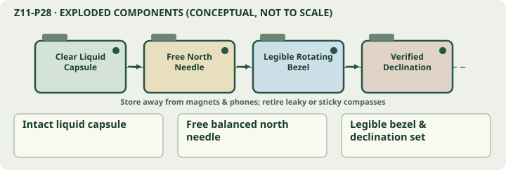

Z11-P28 · Navigation, weather and rescue · New manuscript
Inspect baseplate compass bubbles, needle balance and bezel markings
Verify that a magnetic compass functions smoothly and accurately before relying on it in remote terrain.
When it applies · Pre-trip gear inspection and periodic field checks of liquid-filled baseplate compasses.
Equipment · Baseplate compass checked outdoors away from steel desks, magnets and electronics.

Actions
- Inspect the liquid capsule for large air bubbles (a tiny cold-weather bubble that disappears in warmth is common, whereas a large bubble that pins or tilts the needle degrades accuracy) and check for cracked housing or leaking fluid.[N08, E02, ED]
- Check that the magnetized needle swings freely, settles promptly without sticking to the glass, has a clearly marked north tip and shows no reversed polarity from past magnet exposure (test against known true/magnetic reference outdoors).[N08, ED]
- Verify the rotating bezel turns smoothly without slipping loose, degree graduations remain legible and any adjustable declination screw matches your current trip zone.[T08, N08, ED]
Failure recognition · Carrying a cheap novelty keychain compass or a magnetized-reversed pocket compass stored next to a magnetic phone case into foggy woods.[N08, E02]
Verify · Confirm free needle swing, intact fluid capsule, correct north polarity against a verified reference and smooth legible bezel markings.[N08, T08, ED]
Stop or change course · Retire leaking, sticky or polarity-reversed compasses before departure; never store compasses directly against magnetic latches, speakers or strong magnets.[N08, E02]
Evidence and editorial notes
- E02 · NPS · Ten Essentials (current web edition)
- Section: Navigation; insulation; emergency shelter; emergency food and water · Conditions: Outdoor trips; adjust kit to season and route
Support: Carry essential systems including navigation, insulation, light, water and emergency shelter.
Limitations: Carrying items without practice or cold-weather verification does not ensure readiness. · Conflicting evidence: None; baseline kit system architecture.
Editorial note: Supports failure-mode packing and kit verification cards. · Specialist reviewer: Field education and search and rescue
Primary source · checked 2026-11-24 - N08 · NOAA NCEI · Magnetic Declination (current web edition)
- Section: NOAA Magnetic Declination > definition and true-bearing conversion · Conditions: Using magnetic baseplate compasses near metal, electronics or iron-rich rock
Support: Declination is between true and magnetic north and varies by location and time. Grid convergence is separate. A device may already apply a correction.
Limitations: NOAA definition does not establish site-specific interference distances or diagnosis of magnetic anomalies. · Conflicting evidence: Aligns with B014-P13 and B014-P14.
Editorial note: Grounds declination conversion, metal-clearance and magnetic-anomaly cards. · Specialist reviewer: Navigation and geophysics safety
Primary source · checked 2026-11-24 - T08 · NOAA NCEI · Magnetic Declination (current web edition)
- Section: Definition and bearing conversion · Conditions: Trip planning with a map and compass
Support: Declination varies by date and geographic position. Determine the map reference and current local value.
Limitations: Outdated map margins can have meaningful declination drift over decades. · Conflicting evidence: None; retained for navigation reconstructions.
Editorial note: Preserved for Z11 continuity. · Specialist reviewer: Navigation and search and rescue
Primary source · checked 2026-11-24
Source lineage · NOAA declination and NPS Ten Essentials; new manuscript · Classification · New manuscript.